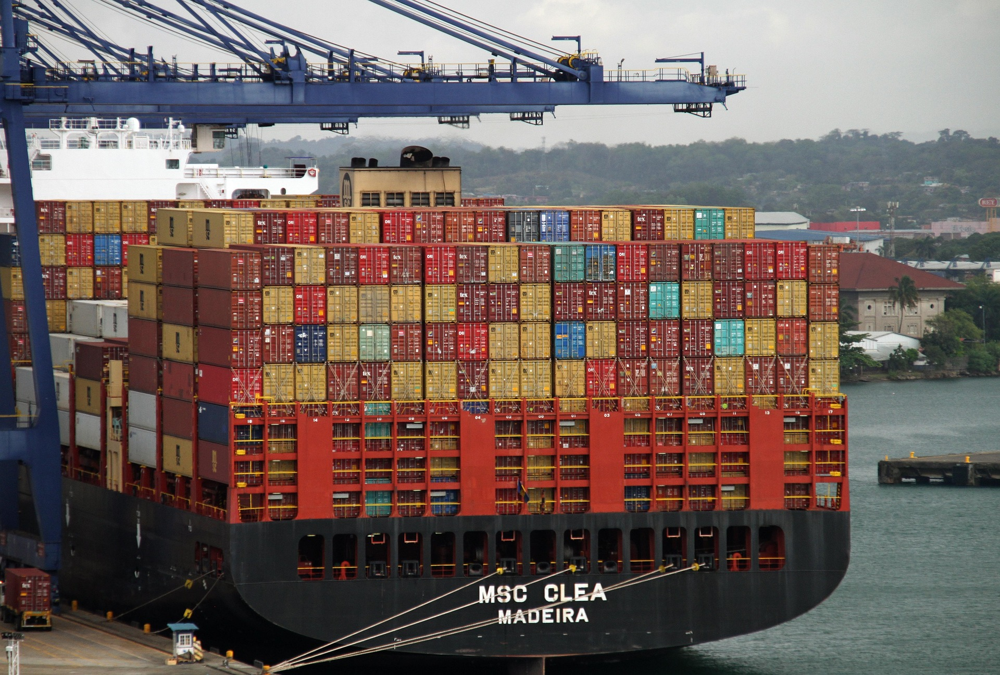
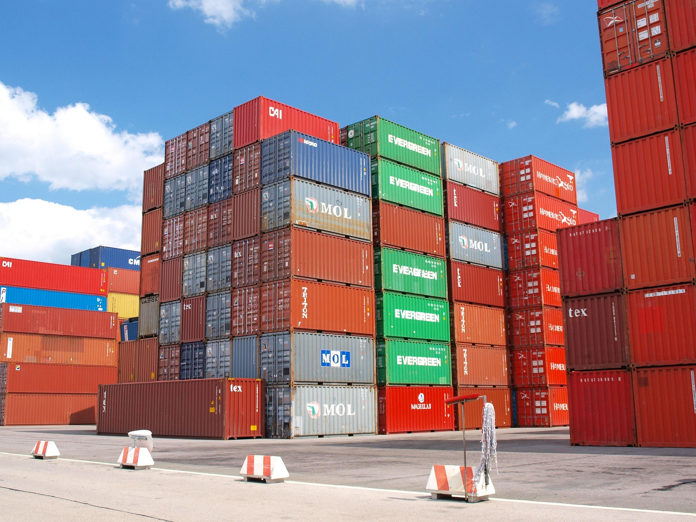
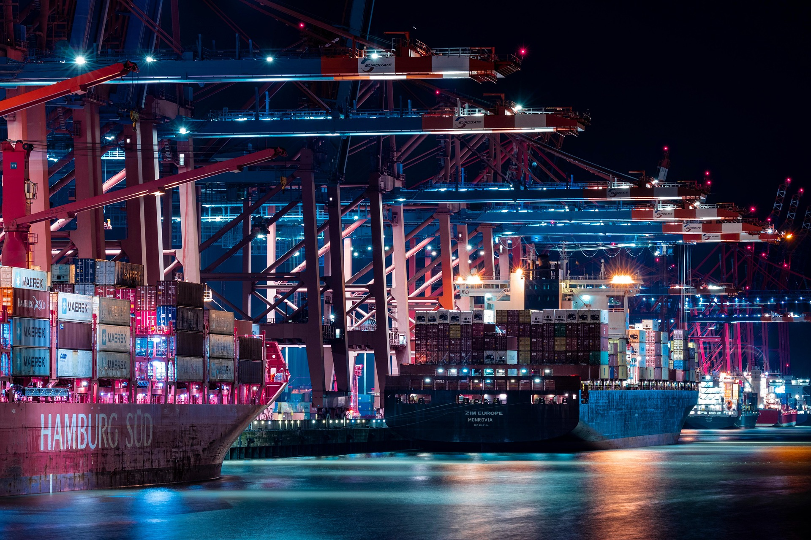

10+
Years of Operational Excellence
Reliable cargo movement beyond borders, connecting ports and delivering excellence.
Get StartedAt Chuksmili Waterways, our mission is to move more than cargo. We move livelihoods, opportunities, and the trust our customers place in us every single day.
To become Africa’s most trusted waterway logistics network by building smarter delivery routes and seamless cargo movement across borders.
For over 10 years, Chuksmili Waterways has remained committed to precision, accountability, and dependable delivery services.
Years of Operational Excellence
Successful Deliveries
On-Time Delivery Rate
Business Partnerships
Because your cargo deserves more than transportation — it deserves commitment.
We deliver on schedule with consistency, professionalism, and accountability.
Real-time updates and clear communication throughout every delivery process.
Every shipment is handled with responsibility from departure to final delivery.
We treat every client relationship as a long-term partnership built on trust.



“Fast delivery, professional communication, and zero excuses.”
“The consistency and reliability truly stand out.”
“Reliable service from pickup to final delivery.”